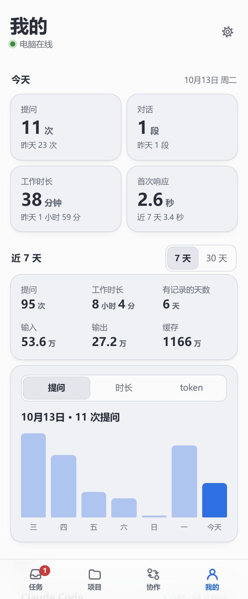

1
2
3
4
5
1
今天
提问次数、用到的对话、工具的工作时长，以及提问后多久得到第一次响应；下面一行是昨天的数。
2
近 7 天或近 30 天
切换统计的时间范围。
3
这段时间的合计
提问、工作时长、有记录的天数，以及输入、输出和缓存的 token。
4
每天的柱状图
按提问、时长或 token 查看，点某一天显示当天的数。往下还有按工具、按项目和按时段的分布。
5
设置
连接线路、电脑端设置、外观、App 更新和退出登录。